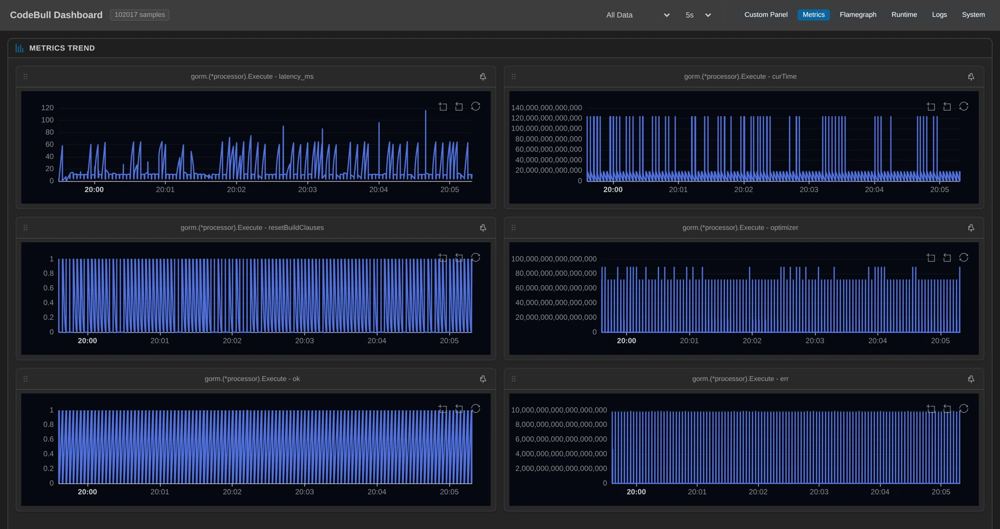
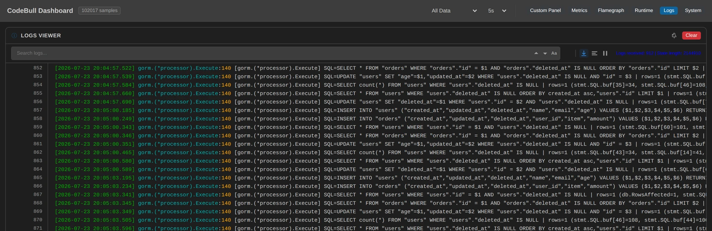

「我的 ORM 到底在幹嘛？」這問題其實有三個層次：
- 多常發生？（哪個操作最熱）
- 發生了什麼？（真正送出去的 SQL 長怎樣）
- 花了多久？（p95 尾巴藏在哪）
平常要同時回答這三個，你得開三種工具、改三次 code。這次我只在 GORM 的一個收斂點上掛了三個觀測點，五分鐘就把三種真相一次量齊——而且 0 改一行原始碼，連看板都是 AI 建的。
為什麼「同時」這麼難
ORM 是黑盒子。要看它：
- ❌ 開
Debug()看 SQL —— 但沒有耗時分佈，而且預設 logger 只在出錯時說話 - ❌ 上 APM 看 p95 —— 得先埋 SDK、架 backend
- ❌ 自己數呼叫次數 —— 又是一輪改 code、重編、重部署
三個問題，三套工具，三次動原始碼。而它們其實都發生在同一個函式裡。
觀測板怎麼搭：一個收斂點、三個觀測點
GORM 所有 CRUD 都會經過 gorm.(*processor).Execute。我在它身上掛了三個維度（全程 AI 透過 MCP 操作）：
① Metric（多常發生） —— Execute 入口計數
codebull_register_tracepoint path: gorm_pkg/callbacks.go line: 82 kind: metric② Log（發生了什麼） —— Execute 出口，SQL 已生成
codebull_register_tracepoint path: gorm_pkg/callbacks.go line: 140 kind: log
template: "SQL={string(stmt.SQL.buf)} | rows={db.RowsAffected}"③ Latency（花了多久） —— 量測 Execute 的 DB 區段（callback 鏈 + logging）wall-clock
codebull_register_tracepoint path: gorm_pkg/callbacks.go line: 83 → endLine: 150 kind: latency
template: "p50(latency), p95(latency), p99(latency), avg(latency)"就這三個點，面板同時開始吐「次數 / 逐字 SQL / 毫秒分佈」。0 改 code、0 重啟。
實證資料（觀測窗口 5.0 分鐘）
| 觀測點 | 維度 | 本輪數值 |
|---|---|---|
Execute:82（metric） | 多常發生 | 入口命中 947 次 |
Execute:140（log） | 發生了什麼 | SQL 事件 917 筆，去重 8 種語句 |
Execute:83→150（latency） | 花了多久 | 見下方 p50 / p95 / p99 |
Latency —— 這次真的量到了（latency_ms，553 samples）
| 統計 | 毫秒 |
|---|---|
| p50（中位數） | 5.69 ms |
| p95 | 60.24 ms |
| p99 | 64.42 ms |
| avg | 11.17 ms |
| min / max | 0.16 ms / 99.46 ms |
一輪 CRUD 的完整肖像（8 種語句，逐字引自面板，全部 rows=1）
| 操作 | SQL（逐字） | 次數 |
|---|---|---|
| Create user | INSERT INTO "users" (...) VALUES ($1..$6) RETURNING "id" | 112 |
| Create order | INSERT INTO "orders" (...) VALUES ($1..$6) RETURNING "id" | 112 |
| Preload("User") | SELECT * FROM "users" WHERE "users"."id" = $1 AND "users"."deleted_at" IS NULL | 112 |
| First(&order) | SELECT * FROM "orders" WHERE "orders"."id" = $1 AND "orders"."deleted_at" IS NULL ORDER BY "orders"."id" LIMIT $2 | 112 |
| Update | UPDATE "users" SET "age"=$1,"updated_at"=$2 WHERE "users"."deleted_at" IS NULL AND "id" = $3 | 113 |
| Count | SELECT count(*) FROM "users" WHERE "users"."deleted_at" IS NULL | 113 |
| First(oldest) | SELECT * FROM "users" WHERE "users"."deleted_at" IS NULL ORDER BY created_at asc,"users"."id" LIMIT $1 | 113 |
| Delete | UPDATE "users" SET "deleted_at"=$1 WHERE "users"."id" = $2 AND "users"."deleted_at" IS NULL | 113 |

latency_ms（左上，尖峰衝過 100 ms）跟同一次呼叫抓下來的變數並排放著——全部出自同一個五分鐘窗口的 102,017 筆樣本。 打開線上面板 →面板讓我看到的四件事
1. 尾巴是中位數的 10 倍（p50 5.7ms → p95 60ms）
一半的 Execute 在 5.7 毫秒內結束，聽起來很快。但 p95 衝到 60 毫秒、p99 64 毫秒、最慢 99 毫秒——尾巴是中位數的十倍以上。這正是只看「平均 11ms」會被騙的地方：平均把尾巴稀釋掉了，真正咬你 SLA 的是那 5% 的長尾。沒有 latency 觀測點，你只會看到「平均很快」，然後在生產環境被 p99 突襲。
2. db.Delete() 底下跑的是 UPDATE（第 8 條）
demo 呼叫 db.Delete(&oldest)，面板顯示送出去的卻是 UPDATE "users" SET "deleted_at"=$1 ...。這是 GORM 的軟刪除：因為 model 內嵌 gorm.Model（帶 DeletedAt），Delete 被默默改寫成蓋刪除時間戳的 UPDATE。資料其實還在表裡。
3. 你沒寫的隱形條件 + 一次 Preload = 兩條 SELECT
八條語句裡，每一條讀寫都自動被加上 "deleted_at" IS NULL——這是軟刪除的另一半，把已刪列擋在外面。而 db.Preload("User").First(...) 一行，面板卻抓到兩條 SELECT：一條查 orders、一條另外查 users（各 112 次）。belongs-to 關聯不是 JOIN，是再補一趟查詢——放大到列表頁就是 N+1 的溫床。
4. 入口 947 ≈ 出口 917：對帳的力量
Metric 入口 947 次、Log 出口 917 筆，差 ~30。這差距本身就是資訊：有約 30 次 Execute 進了收斂點、卻沒在出口生出一條被記錄的 SQL（DryRun / 空 SQL 的交易控制類路徑）。哪天這兩個數字大幅背離，就是一批操作在生成 SQL 前就出事了——有這兩個點，你不用猜，面板先幫你對帳。
誠實揭露：這次量了什麼
這篇 Metric / Log / Latency 三個維度都是本輪實測到的真實資料——特別是 latency，是這次用 kind:latency（entry Execute:83 → exit line 150）真正量到的 latency_ms 分佈，不是估的。Execute:82 上那些裸變數（curTime / err / optimizer 內部值）不列入引用，因為它們是指標原始值、不是可信統計。面板上每個數字都必須有據可查——這是底線。
你要怎麼複製這套（3 步）
- VS Code 搜尋安裝 CodeBull，啟動你的 Go 專案（記得帶 debug flag 編譯：
-gcflags="all=-dwarflocationlists=true -N -l"，CodeBull 才解析得到變數位置與行號）。 - 在 ORM 收斂點掛三個觀測點：入口 Metric、出口 Log（模板
SQL={string(stmt.SQL.buf)} | rows={db.RowsAffected}）、再拉一段 Latency（entry→exit 量耗時）。或直接讓 AI agent 連 CodeBull MCP 呼叫codebull_register_tracepoint。 - 等真實流量跑 5 分鐘，打開 Dashboard：Metric 看頻率、Log 看逐字 SQL、Latency 看 p95/p99 尾巴。
0 改 code、0 重啟、0 重新部署。 ORM 跑了什麼、跑多久，就該看得見。
附錄：可重現性
- 觀測點（一個收斂點
gorm.(*processor).Execute，三個維度）：:82（metric，入口命中計數）:83 → :150（latency，量 Execute DB 區段 wall-clock）:140（log，templateSQL={string(stmt.SQL.buf)} | rows={db.RowsAffected}）
- 環境：gorm-demo（每 3 秒一輪 CRUD）+ PostgreSQL 16（docker，port 5433，本輪全新 volume）+ CodeBull agent（port 8888）
- 證據（2026-07-23，frozen snapshot，
evidence.json）：- 觀測窗口 06:22:15Z → 06:27:12Z（5.0 分鐘）
- Metric 入口 947、Log 出口 917、去重 SQL 8 種（各 112~113 次，rows 全 = 1）
- Latency
latency_ms（553 samples）：p50 5.69 / p95 60.24 / p99 64.42 / avg 11.17 / max 99.46 ms
- 遠端看板上傳：透過 MCP 工具
codebull_generate_dashboard（帶自訂dashboardId）上傳本輪 metric/log 歷史（自訂可讀 id、每篇獨立；服務滾動保留 72 小時，帶同一 id 重新呼叫即覆蓋更新）。

rows 值與 stmt.SQL.buf 原始長度。上面那張八條語句的肖像，就是從這個畫面逐字抄下來的。 打開線上面板 →📊 本文的遠端觀測面板（實證數據，可線上檢視）：gorm-demo-mcp-article-20260723-latency
👉 CodeBull SDK（open source）：github.com/0xbu11/codebull
文中每一條 SQL、每一個數字均出自 CodeBull 對 gorm-demo 執行中服務的實測證據，並可在上方面板連結線上對帳。